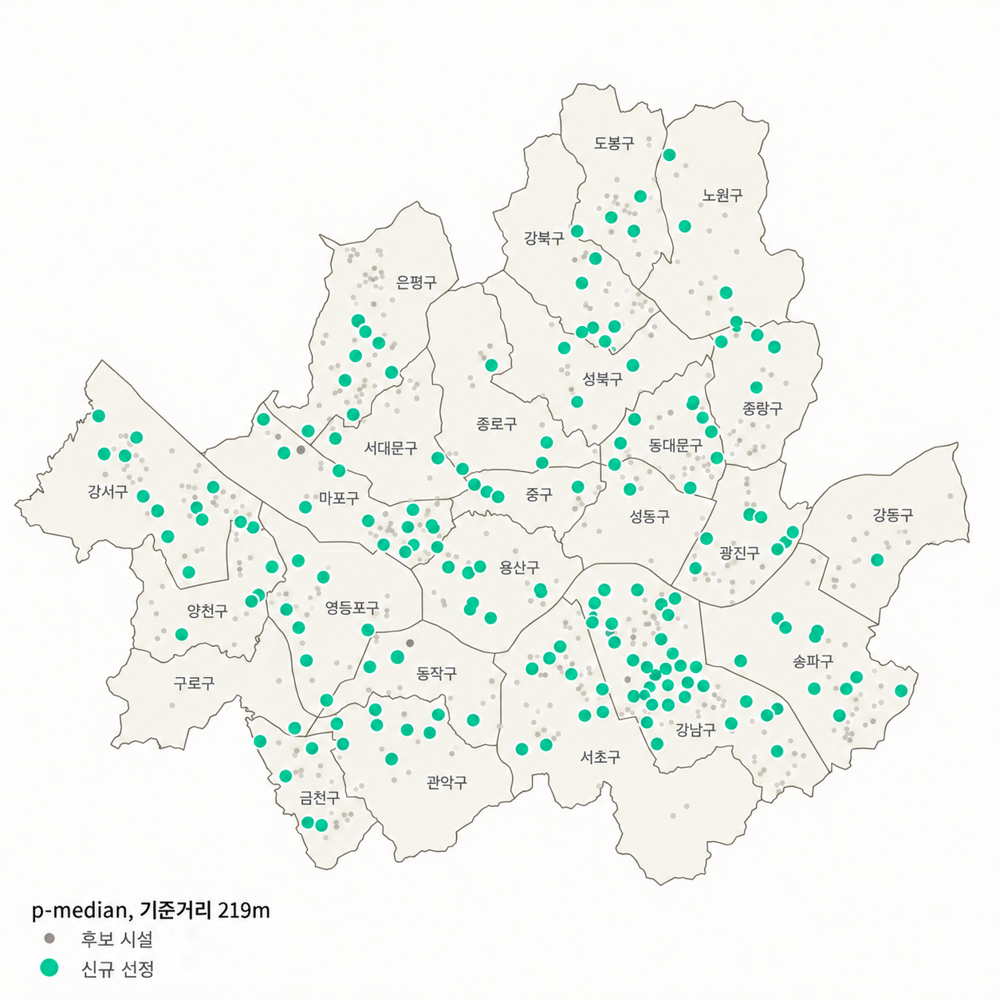
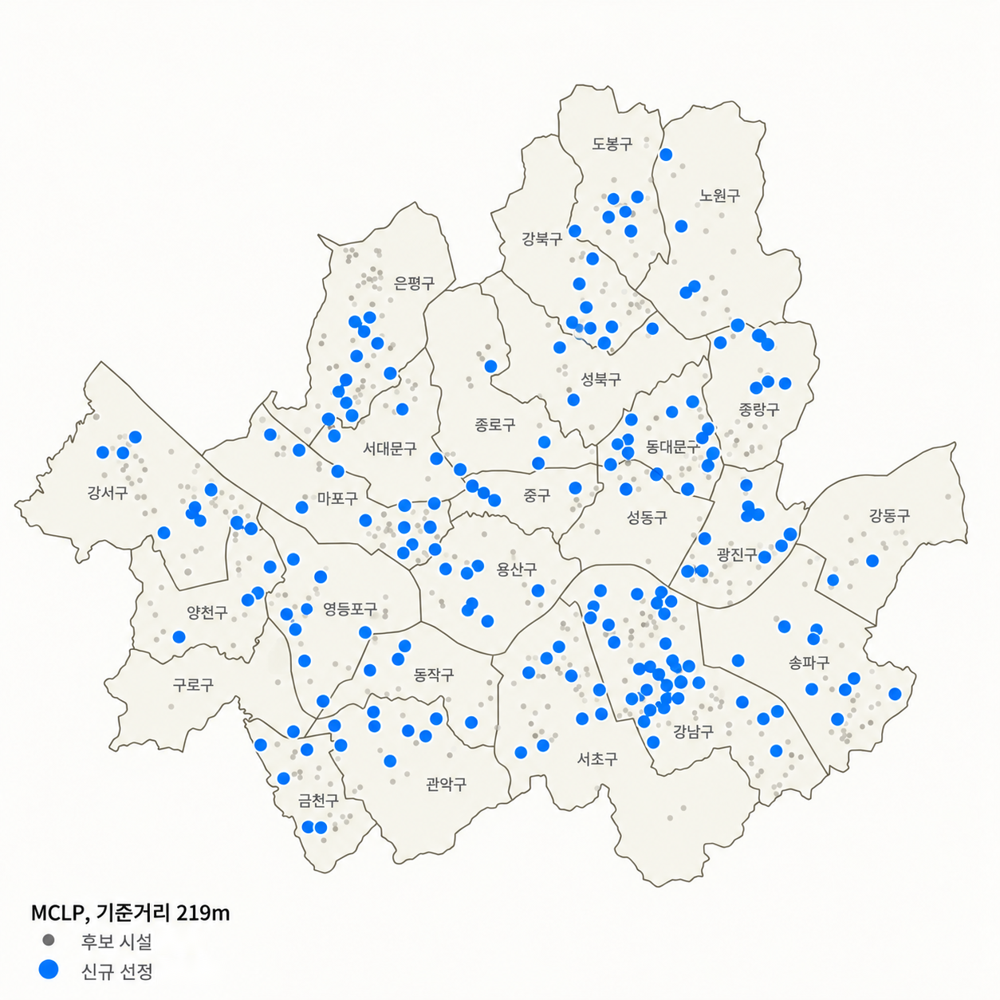
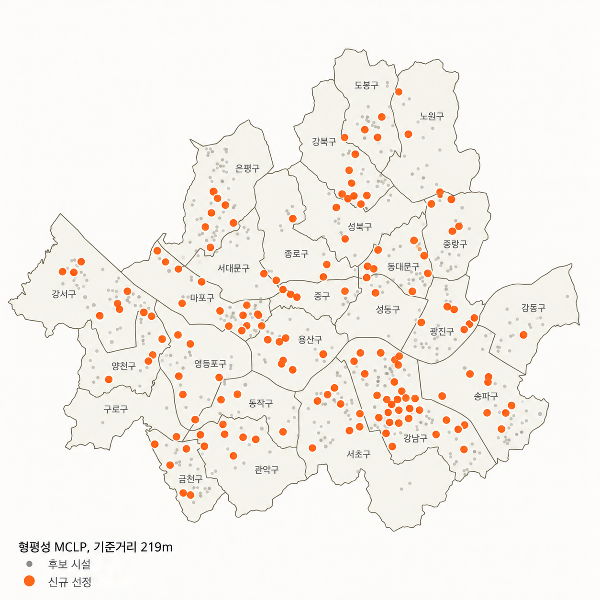

4-4. 평가 지표
커버율
보행거리 219m 안에 쉼터가 있는
고령 유동인구의 비율
고령 유동인구의 비율
MCLP가 최대화하는 값
평균 보행거리
가장 가까운 쉼터까지 보행거리를
고령 유동인구로 가중 평균한 값
고령 유동인구로 가중 평균한 값
p-median이 최소화하는 값
최저 행정동 커버율
강남구 22개 행정동의 커버율 중
가장 낮은 값
가장 낮은 값
형평성 MCLP가 최대화하는 값
수요지 i의 60대 이상 유동인구(09~18시)
가장 가까운 쉼터(기존 + 신규)까지 보행 네트워크 거리
행정동 g의 수요지
4-4. 기존 쉼터 96곳의 현재 수준
강남구 · 기존 쉼터 96곳 · 신규 지정 전(p = 0) · 보행 네트워크 거리
커버율
22.8%
고령 유동인구 10명 중 약 2명만
걸어서 219m 안에 쉼터가 있다.
걸어서 219m 안에 쉼터가 있다.
77.2%는 기준거리 밖
평균 보행거리
407m
가장 가까운 쉼터까지 평균 407m로
기준거리 219m의 약 1.9배다.
기준거리 219m의 약 1.9배다.
0.73m/s로 걸으면 약 9분
최저 행정동 커버율
4.0%
가장 취약한 행정동은 고령 유동인구
100명 중 4명만 219m 안에 쉼터가 있다.
100명 중 4명만 219m 안에 쉼터가 있다.
행정동 간 격차가 크다
이 값을 기준선으로 두고, 신규 쉼터를 더했을 때 세 지표가 얼마나 달라지는지 비교한다.
6-1. 자치구별 고령 유동인구와 거주인구 비중
60대 이상 유동인구(7~9월, 09~18시) · 60세 이상 주민등록인구(2026.9.30) · 각각 서울 합계 대비 비중
유동 비중 − 거주 비중
확인한 점
중구+2.8%p유동 4.2% · 거주 1.4%강남구+2.7%p유동 7.7% · 거주 5.0%서초구+2.1%p유동 6.0% · 거주 3.8%종로구+2.1%p유동 3.7% · 거주 1.6%은평구−1.7%p유동 3.6% · 거주 5.3%도봉구−1.3%p유동 2.8% · 거주 4.1%
도심(중구, 종로구)과 강남권(강남구, 서초구)은 거주보다 낮 시간 고령 유동인구 비중이 높다.
외곽 주거지(은평구, 도봉구, 중랑구)는 반대다.
강남구, 고령 유동 비중 서울 1위
6-2. 자치구별 기존 쉼터 접근성
60대 이상 유동인구 · 직선거리 219m · 서울 쉼터 4,092곳 기준 진단
자치구별 커버율

강남구42.4%25개 구 중 최저
마포구48.5%
서울 전체68.5%
강남구 커버율 가장 낮음
기준거리 밖 고령 유동인구

강남구546,342
송파구354,774
서초구310,632
기준거리 밖 수요 송파구의 1.5배
7. 시사점서울 전역으로 확장
서울 25개 구 적용 예시 · 기존 쉼터 4,092곳 유지 · 신규 250곳 · 보행거리 219m
p-median

고령층의 평균 보행거리 단축이
우선인 구
우선인 구
MCLP

기준거리 내 고령층 커버 확대가
우선인 구
우선인 구
형평성 MCLP

접근성이 낮은 동의 커버율 개선이
우선인 구
우선인 구
강남구에 적용한 분석 절차는 서울 25개 자치구로 확장할 수 있다.
자치구별 수요와 후보시설을 반영하면, 정책 목표에 맞는 모형으로 신규 쉼터 지정 우선순위를 제안할 수 있다.
8. 참고문헌
논문
- Church, R., & ReVelle, C. (1974). The maximal covering location problem. Papers of the Regional Science Association, 32(1), 101-118.
- Hakimi, S. L. (1964). Optimum locations of switching centers and the absolute centers and medians of a graph. Operations Research, 12(3), 450-459.
- 한음, 조혜림, 문성철, 윤성범, 박순용 (2020). 노인보호구역 보행자녹색시간 산정을 위한 보행속도 기준 개선. 한국ITS학회논문지, 19(4), 45-54. doi.org/10.12815/kits.2020.19.4.45
- 서희진, 이준우 (2026). 도시 폭염 대응을 위한 무더위쉼터 서비스 사각지대 및 취약성 분석. 한국방재학회논문집.
데이터
- 한국데이터산업진흥원. 50m 격자 성·연령별, 시간대별 유동인구 (7~9월). 데이터안심구역.
- 서울특별시. 서울시 무더위쉼터 현황 (2026). 서울 열린데이터광장.
- 서울특별시. 자치구별 도보 네트워크 공간정보 (2023.12.20). 공공데이터포털.
- 서울특별시. 서울시 경로당 정보. 서울 열린데이터광장.
- 전국도서관표준데이터 / 보건복지부, 전국 지역보건의료기관 현황 (2025.12.31) / 행정안전부, 읍면동 하부행정기관 현황 (2025.12.31). 공공데이터포털.
- 행정안전부. 지역별(행정동) 성별 연령별 주민등록 인구수 (2026.9.30). 공공데이터포털.
- 통계청 SGIS. 행정구역 경계, 행정동 경계 (ver20260701).
- OpenStreetMap contributors. 강남구 주변 시설 위치 (2026.10 조회).